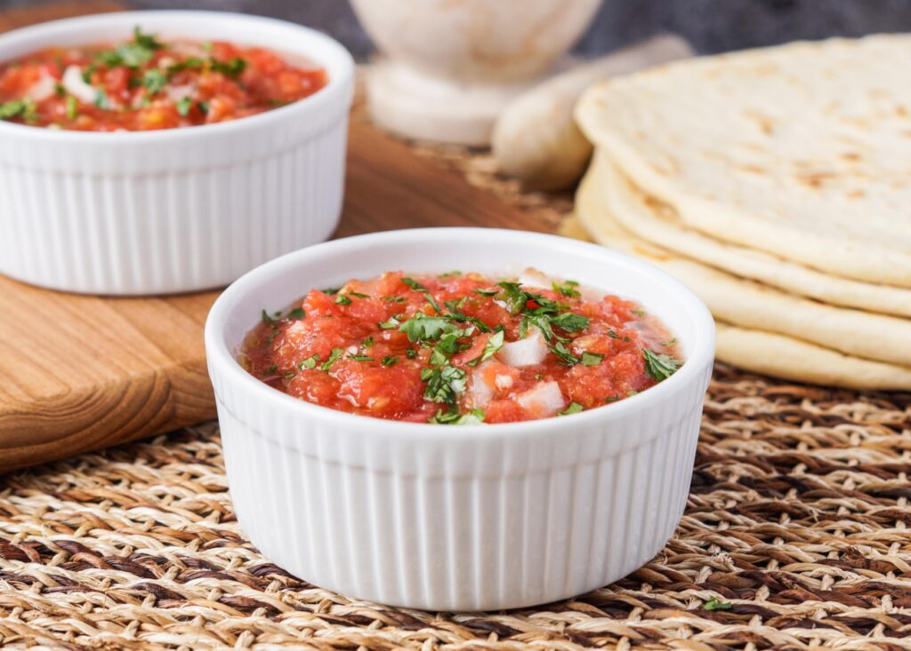

Tomato Choka

Description
Tomato Choka is a flavorful dish from Trinidad and Tobago, made by roasting ripe tomatoes and blending them with garlic, pepper, and seasonings. The mixture is topped with hot oil for a rich, smoky taste. Often served with sada roti, it's a quick and comforting vegetarian favorite in Trini cuisine.
Ingredients
- 3 ripe tomatoes
- 2 cloves garlic (peeled)
- 1 small onion (sliced)
- 1-2 hot peppers (like scotch bonnet or chili-optional)
- Salt to taste
- 1-2 tbsp oil (vegetables or coconut oil recommended)
Steps
- Roast the Tomatoes & Garlic:
- Place the tomatoes and garlic directly over an open flame (gas stove or grill) or roast them in the oven at 400°F (200°C) until the skins are charred and the insides are soft (about 10–15 minutes).
- Cool & Peel:
- Let the tomatoes cool, then peel off the charred skin. Mash the tomatoes and garlic together in a bowl using a fork or mortar and pestle.
- Add Onion & Pepper:
- Mix in the sliced onion. If using hot pepper, you can roast it and mash it in, or finely chop and add it raw. Adjust to your spice level.
- Add Salt:
- Season with salt to taste.
- Pour Hot Oil:
Heat the oil until it’s just about to smoke, then carefully pour it over the mixture. This step adds a smoky flavor and slightly cooks the onions.
- Mix & Serve:
- Stir everything together. Serve warm or at room temperature with sada roti, rice, or even as a side with fried plantain or dhal.
Enjoy!
Home